Nom: Jonathan Caspar
Matricule (4 derniers chiffres): 9041
Courriel: jonathan.caspar@umontreal.ca
temps mis: 20 heures
Nom: Johnny Pho
Matricule(4 derniers chiffres): 6014
Courriel: johnny.pho@umontreal.ca
temps mis: 20 heures
Soumetteur: Jonathan Caspar
| Tâches | Jonathan | Johnny |
|---|---|---|
| Diagramme de classe conceptuel | 50% | 50% |
| Diagrammes de séquence système | 70% | 30% |
| Diagramme de classe | 50% | 50% |
| Diagrammes de séquence | 25% | 75% |
| Diagramme de paquets | 10% | 90% |
| Contraintes OCL | 90% | 10% |
| Diagramme d'état | 65% | 35% |
Le projet .vpp contenant tous les diagrammes liés à la conception du domaine (diagramme de classe conceptuel, diagrammes de séquence) est accessible en cliquant ici.
1) Ajout d'avion
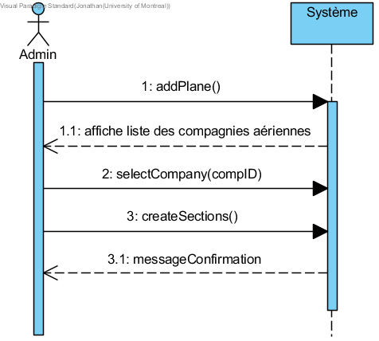2) Consultation des vols par un Administrateur
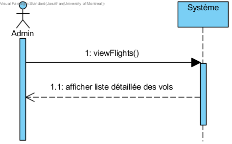3) Consultation des vols par un Client
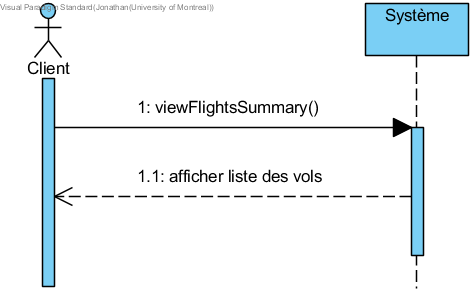4) Création d'un aéroport
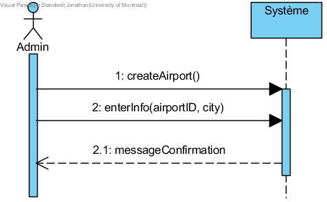5) Création d'une compagnie aérienne
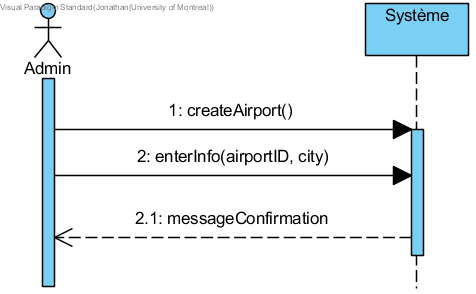6) Création d'un vol
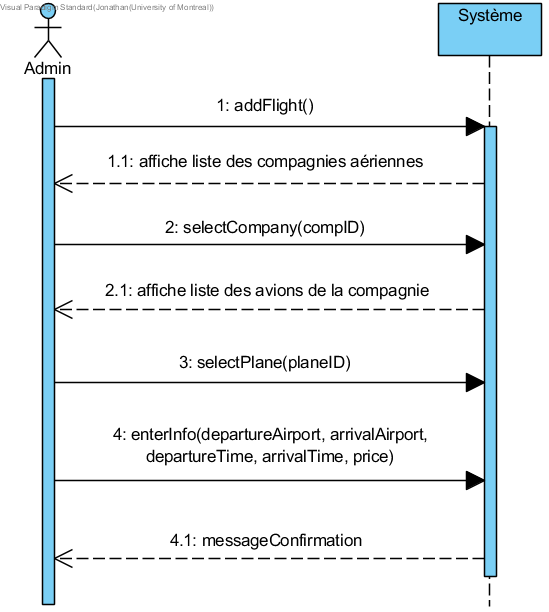7) Modification ou suppression d'un aéroport
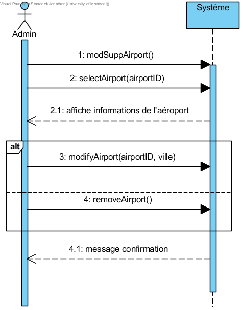8) Modification ou suppression d'un avion
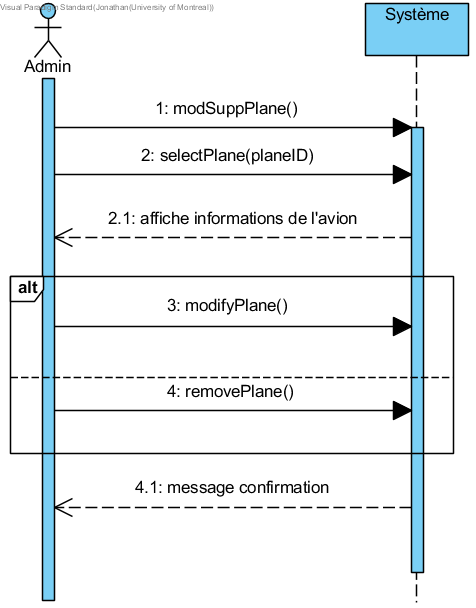9) Modification ou suppression d'une compagnie aérienne
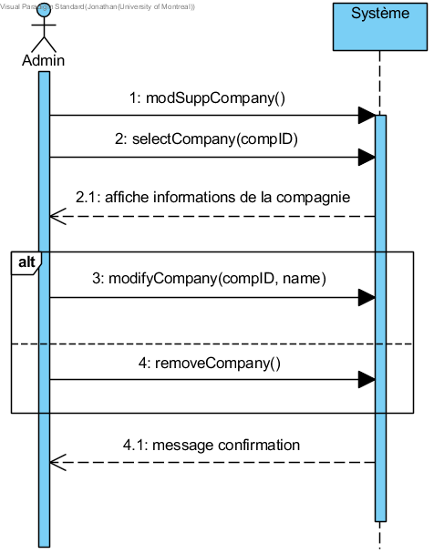10) Modification ou suppression d'un vol
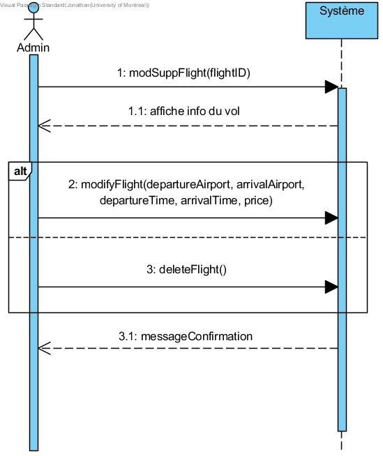11) Paiement, Modification ou suppression d'une réservation
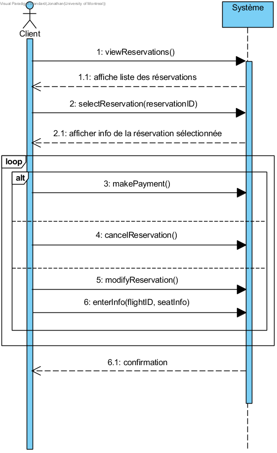12) Réserver un siège
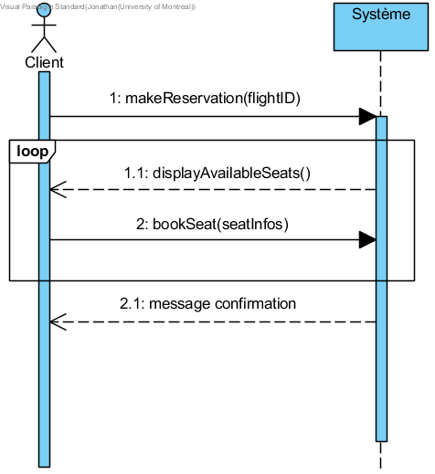Le projet .vpp contenant tous les diagrammes liés à la conception du design (diagramme de classe conceptuel, séquence, de paquets, d'état) est accessible en cliquant ici.
1) Consultation des vols par un Client
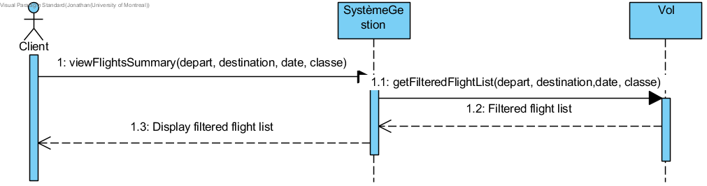2) Réserver un siège
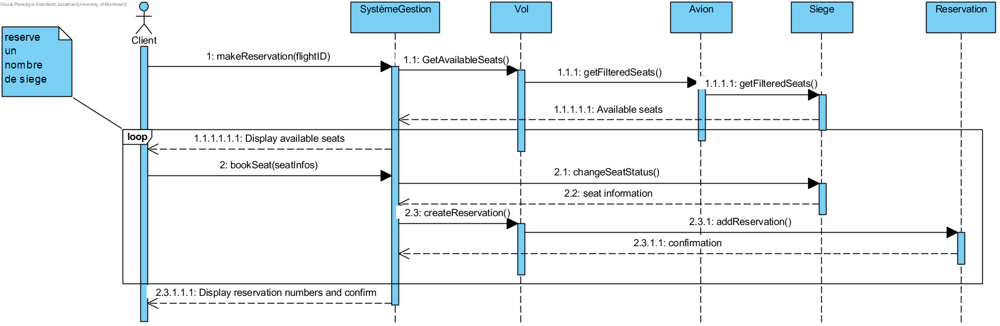3) Payer un siège
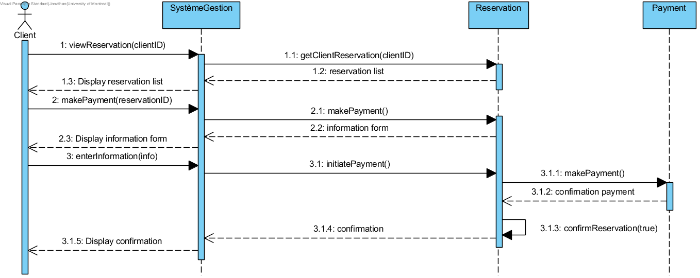4) Modification ou suppression d'une réservation
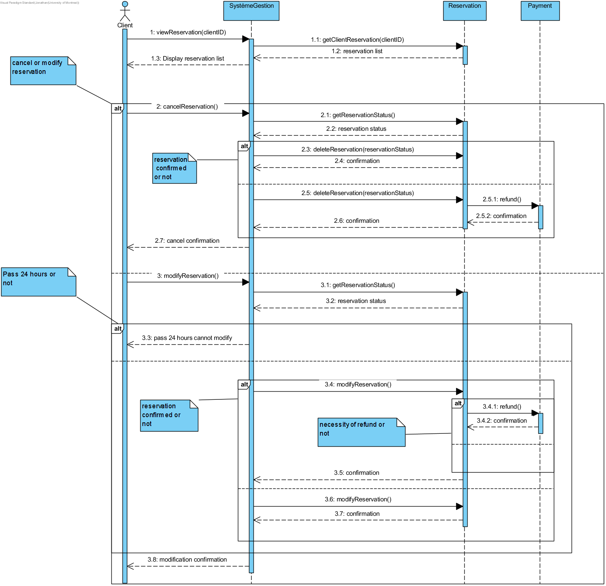
La liste des contraintes OCL se trouve dans le fichier accessible ici.
1) L'aéroport de départ et d'arrivée sont différents.
context Vol inv:
self.departureAirport < > self.arrivalAirport
2) La partie alphabétique de l'ID d'un vol est unique à chaque compagnie et la partie numérique est unique à chaque vol au sein de la même compagnie.
context SystemeGestion inv:
self.compagnies=>forAll(comp | comp.volsOfferts=>forAll(flightID.substring(0,2) = comp.shortName))
context SystemeGestion inv:
(((self.compagnies=>collect(shortName))=>asSet())=>size()) = (self.compagnies=>size())
context SystemeGestion inv:
self.compagnies=>forAll(comp | comp.volsOfferts=>isUnique(flightID))
3) Tous les sièges d'une même section ont le même prix dans la même compagnie.
context CompagnieAerienne inv:
self.avions=>forAll(avion | avion.sections=>forAll(section | ((section.sieges=>collect(price))=>asSet())=>size() = 1 ))
4) Réserver ne peut se faire que pour un siège libre. Identifiez la postcondition de l'opération réserver().
context SystemeGestion inv:
self.vols=>forAll(vol | vol.reservations=>forAll( reserv | ((reserv.siegesReservés=>asSet())=>size()) = reserv.siegesReservés=>size()))
Cycle de vie d'un siège
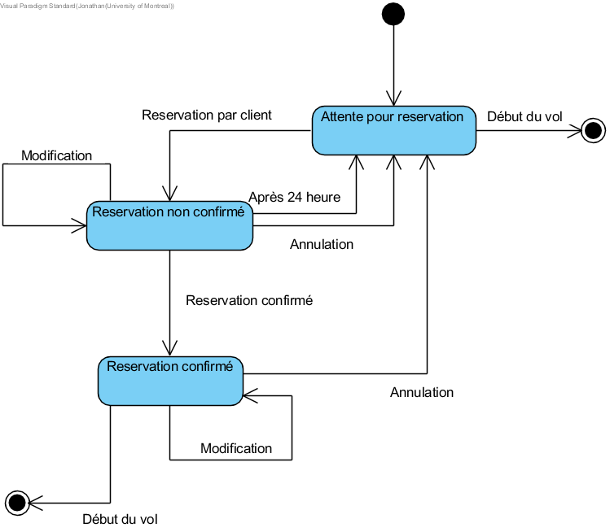